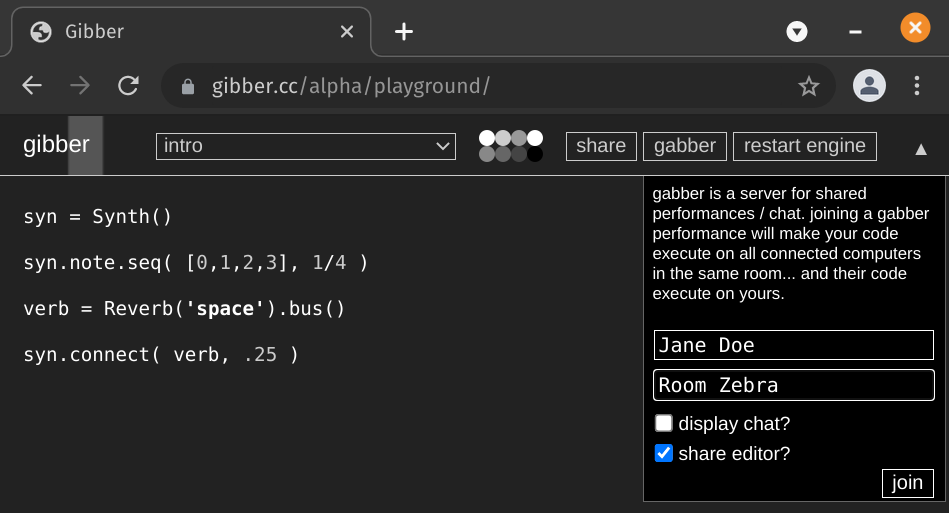
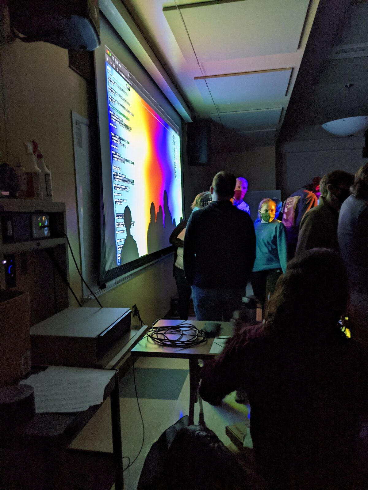
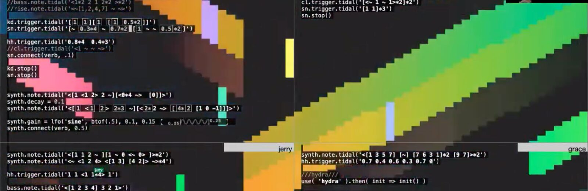

<!doctype html><html lang="en"><head><meta charset="utf-8"><meta name="viewport" content="width=device-width,initial-scale=1">
<title>Rethinking networked collaboration in the live coding environment Gibber</title><link rel="stylesheet" href="../../../style.css"></head><body>
<header class="site"><a href="../../../index.html">NIME 2021–2022 archive</a> <span class="muted">experimental static edition of the PubPub proceedings</span></header>
<main><nav class="muted"><a href="../../../index.html">Archive</a> › <a href="../../index.html">2022</a> › <a href="../index.html">Papers</a></nav><article><h1 class="title">Rethinking networked collaboration in the live coding environment Gibber</h1>
<div class="byline">Charlie Roberts<sup>1</sup>, Ian Hattwick<sup>2</sup>, Eric Sheffield<sup>3</sup>, Gillian Smith<sup>1</sup><div class="aff"><sup>1</sup>Worcester Polytechnic Institue, ; <sup>2</sup>Massachusetts Institute of Technology, ; <sup>3</sup>Miami University of Ohio</div></div>
<div class="meta"><b>Track</b><span>Papers · NIME 2022 · Auckland (hybrid)</span><b>BibTeX key</b><span><code>nime2022_28</code></span><b>DOI</b><span><a href="https://doi.org/10.21428/92fbeb44.38cb7745">10.21428/92fbeb44.38cb7745</a></span><b>Version of record</b><span><a href="https://nime.pubpub.org/pub/4b8l5iqc">https://nime.pubpub.org/pub/4b8l5iqc</a></span><b>PDF</b><span><a href="https://nime.pubpub.org/pub/4b8l5iqc/download/pdf">PubPub PDF</a></span><b>Presentation video</b><span><a href="https://youtu.be/BKlHkEAqUOo">https://youtu.be/BKlHkEAqUOo</a> <span class="badge ok">link live</span> <span class="muted">NIME 2022 - Rethinking Networked Collaboration in the Live Coding Environment Gibber</span></span><b>Other external links</b><span><a href="https://vimeo.com/699646133">https://vimeo.com/699646133</a> <span class="badge ok">link live</span> <span class="muted">Chith - TOPLAP 20th Anniversary</span><br><a href="https://www.youtube.com/watch?v=2gwUVrtyat8">https://www.youtube.com/watch?v=2gwUVrtyat8</a> <span class="badge ok">link live</span> <span class="muted">Keylogger – PLOrk April 30, 2018</span><br><a href="https://youtu.be/H7pm_y8cSmA">https://youtu.be/H7pm_y8cSmA</a> <span class="badge ok">link live</span> <span class="muted">FaMLE Global Scope Gibber excerpts</span><br><a href="https://youtu.be/wjFmljD7ngY">https://youtu.be/wjFmljD7ngY</a> <span class="badge ok">link live</span> <span class="muted">Miami University Laptop Ensemble - Gibber/Gabber Improvisation (excerpts)</span></span><b>Licence</b><span>CC BY 4.0</span></div>
<div class="editor"><h1 id="abstract"><strong>ABSTRACT</strong></h1><p>We describe a new set of affordances for networked live coding performances in the browser-based environment <em>Gibber, </em>and discuss their implications in the context of three different performances by three different ensembles at three universities. Each ensemble possessed differing levels of programming and musical expertise, leading to different challenges and subsequent extensions to Gibber to address them. We describe these and additional extensions that came about after shared reflection on our experiences. While our chosen design contains computational inefficiencies that pose challenges for larger ensembles, our experiences suggest that this is a reasonable tradeoff for the low barrier-to-entry that browser-based environments provide, and that the design in general supports a variety of educational goals and compositional strategies.</p><h2 id="author-keywords"><strong>Author Keywords</strong></h2><p>NIME, proceedings, PubPub, template</p><h2 id="ccs-concepts"><strong>CCS Concepts</strong></h2><p><strong>•Applied computing → Sound and music computing;</strong> Performing arts; </p><p><strong>•Human-centered computing→ Collaborative and social computing</strong> </p><h1 id="introduction"><strong>1. Introduction</strong></h1><p>Over the past decade, live coders have expressed increasing interest in ensemble performance, as evidenced both by greater numbers of such performances and the continued development of live coding environments that support them. <em>Gibber, </em>a browser-based live coding environment with support for both music and graphics programming <a href="#citation-3+ujjKKooH-bottom" id="citation-3+ujjKKooH-inline" data-node-type="citation" class="citation">[1]</a>,<em> </em>initially added elements for networked live coding performance in 2015; however, during a rewrite of Gibber<em> </em>we discarded the prior system in favor of a new design and implementation that takes inspiration from other recently authored live coding environments with collaborative capabilities. Our goal was to provide enough flexibility to support ensembles of different sizes and levels of experience, a claim we will begin to address in this paper.</p><p>We begin this paper with an overview of systems that support collaborative performance in live coding, and then describe how these systems influenced the addition of collaborative features to Gibber. We then examine how three different ensembles made use of these features in a variety of contexts, and critically evaluate what features proved essential to performance and what features were superfluous or required improvement. We used four lenses to frame our analysis: communication, roles and group dynamics, computational efficiency, and extensibility. Our hope is that this research can encourage other ensembles to experiment with collaborative performances using Gibber, which is open-source software and freely available in the browser.</p><h1 id="related-work">2. Related Work</h1><p>As noted by Sang and Essl <a href="#citation-DL5uJqEV2p-bottom" id="citation-DL5uJqEV2p-inline" data-node-type="citation" class="citation">[2]</a>, there are a variety of models for enabling networked live coding performances. <em>Temporal synchronization</em> is especially important in many physically co-located performances, so that performers feel they are playing in time with each other. Many music programming languages provide mechanisms for temporal synchronization, from MIDI Clock messages to more recent technologies like Ableton Link <a href="#citation-4leec5v+LW-bottom" id="citation-4leec5v+LW-inline" data-node-type="citation" class="citation">[3]</a>. In the live coding community, such technologies are sufficient for syncing a variety of environments including TidalCycles <a href="#citation-wryhJCGDSq-bottom" id="citation-wryhJCGDSq-inline" data-node-type="citation" class="citation">[4]</a>, Sema <a href="#citation-o7RbkphoPV-bottom" id="citation-o7RbkphoPV-inline" data-node-type="citation" class="citation">[5]</a>, and others. The original collaborative features of Gibber<em> </em>also contained the ability to synchronize via a proportional controller, while Sema uses a Kuramoto oscillator, and TidalCycles can synchronize via Ableton Link, OSC messages, or MIDI Clock messages. Gibberwocky <a href="#citation-jmL+zxTeKQ-bottom" id="citation-jmL+zxTeKQ-inline" data-node-type="citation" class="citation">[6]</a> is an example of a live coding environment that controls an external application (Ableton Live or Max/MSP/Jitter); this enables it to offload temporal sync between ensemble members to the external application under control<a href="#fn-0-bottom" id="fn-0-inline" data-node-type="footnote" class="footnote">1</a> . </p><p>But syncing time is not the only possibility. Live coding environments frequently also have the ability to synchronize <em>source code, </em>with a variety of different algorithms to choose from as discussed in <a href="https://nime.pubpub.org/pub/4b8l5iqc/draft#collaboration-in-gibber">Section 3</a>. If source code is both shared and executed across all computers in a networked ensemble, users across a remote network can play together even if they are not synced temporally, as every participant is running everyone else’s code in addition to their own. This can also be a successful strategy in a co-located performance if only one ensemble member connects their audio output to speakers. In settings like this the other members are effectively running remote code editors connected to one computer feeding sound reinforcement. The new iteration of Gibber adopts this model, as discussed in <a href="https://nime.pubpub.org/pub/4b8l5iqc/draft#collaboration-in-software">Section 3</a>. We were inspired to focus our collaborative features on code sharing as opposed to time sharing after watching performances given using both Troop <a href="#citation-sFy6VIfTjx-bottom" id="citation-sFy6VIfTjx-inline" data-node-type="citation" class="citation">[7]</a> and Estuary <a href="#citation-By9Utrsf+W-bottom" id="citation-By9Utrsf+W-inline" data-node-type="citation" class="citation">[8]</a>, which use a similar approach. QuaverSeries <a href="#citation-vMlMi1kayj-bottom" id="citation-vMlMi1kayj-inline" data-node-type="citation" class="citation">[9]</a> and its recent successor Glicol <a href="#citation-qnZtIQcaRr-bottom" id="citation-qnZtIQcaRr-inline" data-node-type="citation" class="citation">[10]</a> are two other browser-based live coding environments that also use this model. In addition, QuaverSeries and Gilcol provide an audience view of the code, enabling audience members to receive and execute the code from onlineperformances live on their personal devices instead of watching a video stream, requiring much less bandwidth from audiences members and incurring no audio or video compression artifacts.</p><p>In addition to time and code, other data can be shared between connected clients. For example, both Impromptu <a href="#citation-7dp0EBWxt7-bottom" id="citation-7dp0EBWxt7-inline" data-node-type="citation" class="citation">[11]</a> and the original version of Gibber support sharing tuple-based data between ensemble members. This type of networked data sharing is particularly useful when code is only run on individual computers that are temporally synced, and can be used to share information about rhythm, harmony, and musical pattern.</p><p>Finally, communication between ensemble participants is also an important concern. To the best of our knowledge there are no live coding systems reported in the literature over the last decade that provide any additional mechanisms for communication, such as live video, audio, or text chat; the exceptions to this are Gibber and Lich.js <a href="#citation-qZaJLMSzCQ-bottom" id="citation-qZaJLMSzCQ-inline" data-node-type="citation" class="citation">[12]</a> (a prototype version of EarSketch was also created that included chat capabilities for purposes of conducting an experiment, as described in <a href="#citation-sAL0nZP0W6-bottom" id="citation-sAL0nZP0W6-inline" data-node-type="citation" class="citation">[13]</a>). While text chat can be approximated by code comments / non-executed lines of code, it is arguably difficult to keep track of all the code in a given multi-user session and see such comments, particularly when multiple editors are involved, as is the case with systems like Estuary and Flok<a href="#fn-1-bottom" id="fn-1-inline" data-node-type="footnote" class="footnote">2</a>. LOLC <a href="#citation-Nnd0os3z6U-bottom" id="citation-Nnd0os3z6U-inline" data-node-type="citation" class="citation">[14]</a> is an earlier live coding system that does provide text chat between ensemble members; this chat was often projected to audience members interspersed with code during performances, in the style of some networked music performances by the Hub.</p><p>In <a id="np7kmjom741" href="#n2zlqy456wp" class="reference" data-node-type="reference" data-target-id="n2zlqy456wp">Table 1</a> we provide an overview of the collaborative differences discussed here. We drew inspiration from many of these environments when re-designing the collaborative affordances of Gibber, as described in the next section.</p><table id="n2zlqy456wp"><caption>Table 1</caption><tbody><tr><th><p>Name</p></th><th><p># of Editors </p></th><th><p>Code Share</p></th><th><p>Temporal Sync</p></th><th><p>Other Notable Features</p></th></tr><tr><td><p>Gibber</p></td><td><p>Single or Multi</p></td><td><p>Yes</p></td><td><p>No</p></td><td><p>chat, audio statistics for aiding visualization, shared data</p></td></tr><tr><td><p>Troop</p></td><td><p>Single </p></td><td><p>Yes</p></td><td><p>coarse, <br/>1 Hz</p></td><td><p>highlights code according to user who last edited it, shared data</p></td></tr><tr><td><p>Estuary</p></td><td><p>Multi</p></td><td><p>Yes</p></td><td><p>No</p></td><td><p>multi-language support</p></td></tr><tr><td><p>Flok</p></td><td><p>Multi</p></td><td><p>Yes</p></td><td><p>No</p></td><td><p>multi-language / system support</p></td></tr><tr><td><p>LOLC</p></td><td><p>Single</p></td><td><p>No</p></td><td><p>Yes</p></td><td><p>visualization for audience, shared patterns between performers</p></td></tr><tr><td><p>Sema</p></td><td><p>Multi *</p></td><td><p>No</p></td><td><p>Yes</p></td><td><p>multi-language support</p></td></tr><tr><td><p>Impromptu</p></td><td><p>Single</p></td><td><p>No</p></td><td><p>Yes</p></td><td><p>shared arbitrary data</p></td></tr><tr><td><p>TidalCycles</p></td><td><p>Single</p></td><td><p>No</p></td><td><p>Yes</p></td><td><p>wide variety of sync methods available <a href="#citation-AXE0L7Dxxb-bottom" id="citation-AXE0L7Dxxb-inline" data-node-type="citation" class="citation">[15]</a></p></td></tr><tr><td><p>Lich.js</p></td><td><p>Multi</p></td><td><p>Yes</p></td><td><p>No</p></td><td><p>text chat</p></td></tr><tr><td><p>QuaverSeries &amp; Glicol</p></td><td><p>Single</p></td><td><p>Yes</p></td><td><p>No</p></td><td><p>live code streaming to audience members</p></td></tr><tr><td><p>Republic</p></td><td><p>Single</p></td><td><p>Yes</p></td><td><p>Yes</p></td><td><p>Distributed code execution</p></td></tr></tbody></table><p><em>A high-level overview of collaborative features across a selection of live coding environments.</em><br/><em>* Sema provides multiple text-editing areas that control different aspects of language design and musical performance; however, it does not provide collaborative views of the code of other ensemble members.</em></p><h1 id="collaboration-in-gibber">3. Collaboration in Gibber</h1><p>We conducted our initial development work on networked performance back in 2015 with a system named <em>Gabber </em><a href="#citation-Of83Ho70hJ-bottom" id="citation-Of83Ho70hJ-inline" data-node-type="citation" class="citation">[16]</a><em>. </em>This system contained features that are rarely found in live coding environments. For example, while many live coding environments support the display of multiple editors showing code from other performers, Gabber also optionally supported performers editing the code of other performers, and then selectively executing code on specific computers. Having the ability to target specific computers for code execution enabled ensembles to use their laptops as a distributed speaker array, a concept (perhaps) first explored by the group PowerBooks Unplugged using the SuperCollider programming language and Republic extension <a href="#citation-Wdz6sG37fO-bottom" id="citation-Wdz6sG37fO-inline" data-node-type="citation" class="citation">[17]</a>. In addition to syncing code and providing unique affordances for code execution, Gabber also synced connected clients temporally via a hybrid proportional controller model. </p><p> However, after watching numerous performances by groups such as TYPE<a href="#fn-2-bottom" id="fn-2-inline" data-node-type="footnote" class="footnote">3</a> using Troop or SuperContinent <a href="#citation-lOPypyLAI8-bottom" id="citation-lOPypyLAI8-inline" data-node-type="citation" class="citation">[18]</a> using Estuary, we wanted to implement a simpler model for networked performance. We decided that temporal sync was mostly unnecessary and focused on sharing code. Code was previously shared using operational transforms <a href="#citation-lNfhRblDLQ-bottom" id="citation-lNfhRblDLQ-inline" data-node-type="citation" class="citation">[19]</a> to sync networked code editors. But over time we observed that while in general performance was acceptable, there were occasional glitches in sync resulting in garbled text. Conflict-free replicated data types (CRDT) <a href="#citation-L8cDQ+5hkW-bottom" id="citation-L8cDQ+5hkW-inline" data-node-type="citation" class="citation">[20]</a> have since emerged as an alternative to operational transforms. While both operational transforms and CRDTs enable divergent state spread across multiple nodes to converge, CRDTs can work with peer-to-peer connections (no centralized server is required, except perhaps to make initial connections) and often perform better under poor network conditions.</p><p>Gabber originally supported a multi-editor view, where each performer had their own code editor and every performer could see every editor; in our refactoring we initially decided to instead implement a shared buffer mode, where all performers edit the same single buffer of text. At the request of FaMLE, we added a an additional mode where each user controls their own personal text buffer, as seen in <a id="nj39t9u696n" href="#nigdv5o2lm2" class="reference" data-node-type="reference" data-target-id="nigdv5o2lm2">Figure 3</a>. Which editor mode is employed is determined when a new virtual “room” for a performance is created via the GUI of Gibber as shown in <a id="n7p3evb07dq" href="#nefhpbua3lr" class="reference" data-node-type="reference" data-target-id="nefhpbua3lr">Figure 1</a>.</p><figure id="nefhpbua3lr" class="image"><a href="https://assets.pubpub.org/1vd3hx30/41649980648289.png"></a><figcaption id="nefhpbua3lr-figure-caption"><div><strong>Figure 1</strong><div><p>Interface for joining a collaborative session in Gibber. When the “share editor” option is checked, a single shared buffer is used by all participants for editing.</p></div></div></figcaption></figure><p>While these decisions (abandoning temporal synchronization, moving from operational transforms to CRDTs, supporting both single and multi-buffered editing) were the biggest changes to Gabber, numerous smaller changes were also implemented in response to feedback from performers. These will be discussed in the next section, where we discuss how three different ensembles at three different universities used Gibber for networked performances in a variety of different configurations and contexts.</p><h1 id="gibber-gabber-in-performance">Gibber / Gabber in performance</h1><p>In this section we begin by describing ensemble configurations and performance settings for three different performances by three ensembles. We then examine how Gibber was used in all three performances using four different lenses: Ensemble Communication, Roles and Group Dynamics, Computational Efficiency, and Extensibility.</p><h2 id="performances">Performances</h2><h4 id="performance-1---online-duo">Performance #1 - Online / Duo</h4><p>This online performance by the duo Chith featured Charlie Roberts, who programmed music, and Gillian Smith, who created audio-reactive visuals using a mix of p5.js and Hydra running inside of Gibber. The performance itself was part of the TOPLAP 20th anniversary series; it lasted about twenty minutes and was streamed live to Twitch and YouTube. The performers used a single shared text editing buffer as depicted in the video below.</p><figure class="embed"><div class="embed-card">External content: <a href=""></a> <span class="badge unk">not checked</span></div><figcaption id="nsvhdvundnd-figure-caption"><div><p>Chith - TOPLAP 20th Anniversary Peformance - https://vimeo.com/699646133</p></div></figcaption></figure><h4 id="performance-2---in-person-thirteen-member-ensemble">Performance #2 - In person / Thirteen member ensemble</h4><p>This performance was by the Miami University Laptop Ensemble (MULE). MULE is new to Miami University and open to any major, though for the inaugural semester nearly all members were undergraduate students from the Music and Emerging Technology in Business and Design departments. None had significant programming experience prior to this performance.</p><p>Gabber was used on a twenty-minute long structured improvisation that closed the concert (see video below). The performance plan was developed through multiple group rehearsals and discussions during the ensemble’s weekly meetings. A shared code buffer was executed on an auxiliary laptop connected to a projector and large speakers. The concert took place in a large ensemble rehearsal space with approximately sixty audience members in attendance.</p><figure class="embed"><div class="embed-card">External content: <a href=""></a> <span class="badge unk">not checked</span></div><figcaption id="n48s278n9o3-figure-caption"><div><p>Miami University Laptop Ensemble (MULE) - Gibber/Gabber Improvisation - https://youtu.be/wjFmljD7ngY</p></div></figcaption></figure><figure id="n5ykw0sg3t1" class="image"><a href="https://assets.pubpub.org/3nc4l10u/21643576959866.jpg"></a><figcaption id="n5ykw0sg3t1-figure-caption"><div><strong>Figure 2</strong><div><p>Snapshot taken during MULE’s performance, featuring live visuals generated with Hydra, a shared code editor, and engagement with audience members.</p></div></div></figcaption></figure><h4 id="performance-3--online-six-member-ensemble">Performance #3- Online / Six member ensemble</h4><p>This performance was by FaMLE, the MIT laptop ensemble. The ensemble consisted of five students plus the ensemble director, but only three students and the director took part in the compositions using Gibber. Previously the ensemble had used other live coding environments, in particular the MiniTidal environment in Estuary, and two of the students who performed with Gibber had participated in those performances. In addition, several members of the ensemble (although none of those who performed with Gibber) had developed live coding languages themselves; one of the other pieces on the concert described here was performed in one of these languages.</p><p>Ensemble members are required to take responsibility for a composition in FaMLE performances, and the concert included four short compositions performed in Gibber. One performer in particular wanted to create their own minimalist API for their piece, necessitating changes as described in <a href="https://nime.pubpub.org/pub/4b8l5iqc/draft#lens-4-extensibility">lens 4 below</a>.</p><p>The concert took place over Zoom, with all performers participating remotely. The ensemble director performed as part of the ensemble, and provided the audio and video feed for the performance. The various compositions all used the multi-buffer (non-shared) mode.</p><figure class="embed"><div class="embed-card">External content: <a href=""></a> <span class="badge unk">not checked</span></div><figcaption id="n5pv5bo1t31-figure-caption"><div><p>FaMLE Global Scope Gibber excerpts - https://youtu.be/H7pm_y8cSmA</p></div></figcaption></figure><h2 id="lens-1-communication">Lens 1: Communication</h2><p>We use the lens of <em>communication</em> to examine how ensemble members communicated with each other, and how the software itself communicated with the ensemble.</p><p>Although supportive of showing their text chats to make process more visible to audiences, Chith didn’t feel that Gabber’s text chat was fluid enough to help make important decisions and transitions throughout the performance. Instead, they ran a private voice chat via Discord and used that to communicate. Having a single person in charge of music and a single person in charge of graphics perhaps makes for more frantic coding than would be needed in a larger ensemble, and using voice chat enables concurrent coding and communication.</p><p>FaMLE also ran a voice chat via Discord, and primarily used comments in the code editor to communicate with the audience during the performance. At times the voice chat caused a disconnect for the audience as they could see performers speaking over Discord in the Zoom video stream, but wouldn’t hear anything as they might expect. This is primarily an issue for remote concerts as there is no visual indication of whom the speaker is addressing; in a live context communication between performers would likely more obvious via orientation of bodies and other physical gestures. In previous performances using other environments text chat was used to communicate performance instructions, which would also be displayed to the audience. For this performance, the director felt that managing both text chat and the Gibber interface was a cognitive burden.</p><p>MULE regularly used text chat in Gibber to coordinate actions during rehearsals. However, in the exhilaration of live performance, this communication was limited mostly to expressions of approval and encouragement (e.g. comments like “woo!” and “let’s go!”). Notable exceptions were occasional suggestions from the ensemble director to the “MC” for top-level musical changes (e.g. tempo or key), as described in the lens on roles and group dynamics.</p><h3 id="communicating-about-mappings">Communicating About Mappings</h3><p>Early on during practice sessions by Chith, the visual performer found it was difficult to decide what instruments they wanted to map their visual effects to. In many live coding systems this is not a concern, as visuals are instead mapped to the output of an FFT analysis of the entire musical work; this is because audio and visuals are often generated in separate environments (for example, TidalCycles + Hydra) and the visual system has no access the audio output of individual instruments in the musical system. While using an FFT has its benefits, it often precludes accurately mapping particular visual effects to the output of specific instruments, as frequency spectra from many instruments overlap; mapping visuals to specific instruments can arguably be used for more dramatic effect, or, at the very least, for different effects<a href="#fn-3-bottom" id="fn-3-inline" data-node-type="footnote" class="footnote">4</a>. Since Gibber runs both audio and visuals in the same language (JavaScript) and memory space, it does afford mapping visual elements to the output of specific instruments, even though visuals generated in Gibber can come from the libraries for p5.js <a href="#citation-48D+ZNuZdk-bottom" id="citation-48D+ZNuZdk-inline" data-node-type="citation" class="citation">[21]</a>, Hydra, Marching.js <a href="#citation-ehazKSoEL+-bottom" id="citation-ehazKSoEL+-inline" data-node-type="citation" class="citation">[22]</a>, or any combination of the above. </p><p>In order to aid communication of which instruments are currently active, and give some approximation of the dynamic range of envelope followers placed on them<a href="#fn-4-bottom" id="fn-4-inline" data-node-type="footnote" class="footnote">5</a>, we added the ability to dynamically display the current envelope output of each instrument next to the name of the variable that contains it, as shown in the video of Chith’s performance. The visuals performer found this visualization critical to her performance. Being able to see the names of instruments as they were added not only made it possible to tie visual effects to specific instruments, but also made it much easier to interpret the audio performance as someone untrained in digital audio. This additional information channel also reduced the burden on voice communication, and removed the risk of transcription errors in copying instrument names.</p><h3 id="potential-communication-improvements">Potential Communication Improvements</h3><p>Meta-discussion of Gabber’s communication affordances revealed that the chat could potentially be more useful with the incorporation of some options for visual customization. For example, since chat text is overlaid on top of any generated visuals (without the benefit of the black background behind characters in the code window), providing a means to enlarge text or change background color or opacity may help make it easier to read and follow more complex message chains. Additionally, separating the chat window from the main editor window may encourage novice users to put more detailed instructions and suggestions in the chat as it could be excluded from projected or streamed visuals. Since Discord has already proven useful in performances by both Chith and FaMLE, adding basic voice chat functionality to Gabber via WebRTC may be more convenient than configuring a second application solely for communication while helping to reduce the mental load for novices occupied primarily with typing code. A recent study compared both text and voice chat for live coding collaboration, and found that while both have areas in which they excel, voice chat proved more useful for realtime coordination during performance <a href="#citation-5czmzwF8kB-bottom" id="citation-5czmzwF8kB-inline" data-node-type="citation" class="citation">[23]</a>. However, <a href="https://nime.pubpub.org/pub/4b8l5iqc/draft#ncyj1zryi7k">as noted above</a> voice chat in remote performances may be confusing for the audience, and in colocated performance may not be viable. </p><h2 id="lens-2-roles-and-group-dynamics">Lens 2: Roles and Group Dynamics</h2><p>Ideally, Gabber would be able to accommodate a variety of different group dynamics, which in turn would accommodate a greater number of compositional / improvisational choices. In the lens of <em>roles and group dynamics</em> we examine the structure of our three performances, and how the affordances of Gabber afforded or hindered them. </p><p>Chith had perhaps the simplest performance in this regard, with one member in charge of music and the other in charge of graphics. Transitions, beginnings, and endings were all negotiated via discussion during the performance. However, even with this collaboration, tensions arise. For example, the performers in Chith used a single shared buffer for code editing, and the stream came from Roberts’ computer. As the code for the performance could not fit into the onscreen editor, audience members were left watching the code editing actions of Roberts, while the editing actions of Smith went mostly unobserved, much further down in the buffer. In future performances, Chith will most likely use dedicated buffers for each performer instead of the single shared buffer, however, one drawback of having multiple editors onscreen is that there would be more occlusion of the audio-reactive visuals.</p><p>MULE designed their performance with pre-assigned roles and groups. This was partially done to help focus the efforts of less-experienced ensemble members, but also became a necessity after the disorganization of early rehearsals frequently resulted in cacophony. For example, before role assignments, ensemble members would often initiate multiple instances of instruments and sequences, resulting in dozens of divergent musical ideas. MULE eventually decided to split the ensemble into smaller groups of 2-3 members assigned to familiar musical roles, such as percussion, bass, melodic synth, etc. Each of these groups shared responsibilities for parameters and sequences on a single instrument, which streamlined the collective efforts. Moments before the performance, the shared editor was divided into sections for each group using comments to visually separate blocks of code. In addition, one ensemble member who showed early interest and aptitude for ancillary features in Gibber was assigned the role of MC. This member learned how to add and route effects on their own time and was given sole responsibility for changing top-level musical parameters such as tempo, scale, and key. The MC was also charged with monitoring the overall musical texture, deactivating or executing instruments and sequences as needed.</p><p>FaMLE used several different approaches to organizing group dynamics across compositions. Two compositions used the standard approach of assigning individual roles to each performer. Within these roles, performers had the freedom to improvise based on code examples and compositional structures developed during rehearsals, but were responsible for defining and altering their own sequences and instruments.</p><p>The third FaMLE composition, titled ‘Terms of Service’, was based on the creation of a minimalistic API, and the basic structure of the performers’ code was predetermined. A global pitch array was shared by all performers; each performer was able to generate their own pitch sequence by copying the global array and applying transformations, and each performer was also responsible for defining and controlling their sound generating processes. Available transformations are detailed in the API — more details on the implementation will be discussed using <a href="https://nime.pubpub.org/pub/4b8l5iqc/draft#lens-4-extensibility">Lens 4</a>. </p><p>The fourth composition, entitled ‘Breakout’, specifically focused on the fact that although performers were using individual code boxes, these code boxes are in fact different views into shared memory. While performers began by defining their own sequences and instruments, over the course of the piece performers would ‘steal’ control over other performers’ instruments by redefining these instrument’s pitch sequences. This allowed for rapid changes of sequences, and even battles over control over different voices, but also made it difficult to perceive which sequence definition was currently active. </p><p>This is one instance where the annotation system built into Gibber would provide vital visual clues; however, the current implementation doesn’t support annotations for code boxes controlled by other performers due to technical challenges.</p><figure id="nigdv5o2lm2" class="image"><a href="https://assets.pubpub.org/ykbbdriv/31643680200851.png"></a><figcaption id="nigdv5o2lm2-figure-caption"><div><strong>Figure 3</strong><div><p>Screenshot showing multiple definitions for ‘synth.note.tidal’. The active sequence at this moment is in the bottom right codebox; however, this is not visually apparent.</p></div></div></figcaption></figure><h2 id="lens-3-computational-efficiency">Lens 3: Computational efficiency</h2><p>The design decision to forgo temporal synchronization in favor of shared code and shared code execution affected each ensemble in different ways. Here we use the lens of <em>computational efficiency </em>to examine the consequences of this decision, and the effects of Gibber’s computational design more broadly. </p><p>For Chith, there was little to no concern about computational efficiency. Visuals in Gibber run in the main thread (for p5.js) or on the GPU (for Hydra and Marching.js) while all audio sequencing and signal processing occurs in an AudioWorklet, a specialized node that runs arbitrary JavaScript or WebAssembly in a separate thread <a href="#citation-q/RhdiZmfA-bottom" id="citation-q/RhdiZmfA-inline" data-node-type="citation" class="citation">[24]</a> . This means that each of the two performers were effectively using different compute resources and not competing with each other. Roberts also prefers to do “blank slate” live coding—not using any starter code and typing “everything” from scratch<a href="#fn-5-bottom" id="fn-5-inline" data-node-type="footnote" class="footnote">6</a>— which limits the number of instruments and effects they are able to incorporate over the duration of a performance, which in turn limits the processing power required. Since the two performers used different physical computers, there was the potential for uneven experiences between them. Chith streamed their performance from the higher-end computer in the duo (belonging to Roberts); however, Smith would occasionally see minor performance issues (primarily visuals lag when using Hydra) that Roberts could not see.</p><p>MULE featured a much larger ensemble of thirteen performers using personal laptops of varying make, model, and generation. Some members with older computers found that the browser slowed to a crawl once live-generated visuals were incorporated, making it difficult to navigate the shared editor. As a workaround, the members were asked to join the group’s Gabber room after Hydra was started on the computer connected to the projector, which removed the processing load of the visual engine from their individual machines. Additionally, since many of the members were novice programmers, they found it challenging to consistently instantiate and reference instruments with unique variable names, which in turn lead to “phantom instruments“ left running with no means to “kill” them. If enough of these are created, they can easily bog down a performance, squandering computational resources and muddling musical intentions. Because of this, we added a function named <code>find(instrumentType)</code> that searches for a specific type of instrument and checks to see if any of the found instruments are not assigned to a variable in Gibber. Such instruments are returned in an array at which point they can be conveniently disconnected from the audio graph.</p><p>FaMLE also featured performers using a variety of laptops, and found similar performance issues. As with MULE, disabling graphics processing on older laptops helped considerably. Of the four pieces performed with Gibber, three utilized the &#x27;“blank slate” live coding model, although the basic code structure was based on pre-composed templates. </p><h2 id="lens-4-extensibility">Lens 4: Extensibility</h2><p>In this section we use the lens of <em>extensibility </em>to address a variety of questions. Did Gibber have all the necessary features to support compositional concepts? When features needed to be added, could they be implemented by performers? What are the limits to the extensibility that Gibber provides?</p><p>These questions become important due to a (relatively) recent change to the audio engine for Gibber. Its previous version was written before the existence of AudioWorklets that run in their threads, and instead used ScriptProcessor nodes. ScriptProcessor nodes are capable of running sample-level audio callbacks written in JavaScript just like the AudioWorklet node is; however, the ScriptProcessor runs in the main thread, which made it easy to control every aspect of Gibber from within the generated audio callback itself<a href="#fn-6-bottom" id="fn-6-inline" data-node-type="footnote" class="footnote">7</a>. Moving to AudioWorklets and their separate threads brought better performance reliability and lower latency, but came with the constraints inherent to multithreaded programming <a href="#citation-z06WW9smYg-bottom" id="citation-z06WW9smYg-inline" data-node-type="citation" class="citation">[25]</a>. Operations that travel between threads have to be carefully considered and involve a message-passing queue, and as a result there is no longer the “anything goes” mentality provided by having everything run in a single thread.</p><p>This became an issue for FaMLE, whose members wanted as much control over sequencing and musical pattern manipulation as possible, functionality that now takes place in the audio thread. Experimentation with manipulating data in the audio thread caused frequent crashes of the audio engine; in response, a “restart engine” button was added to Gibber’s user interface (visible in <a id="nzna6c2s3t1" href="#nefhpbua3lr" class="reference" data-node-type="reference" data-target-id="nefhpbua3lr">Figure 1</a>) so that crashes wouldn’t require a browser refresh.</p><p>Two specific compositional needs were the ability to generate and continuously update shared data buffers, and the ability to define shared pattern manipulation functions. For example, in “Terms of Service” the compositional idea was to create an API of pattern manipulation functions. Functionality to dynamically inject these functions into the audio thread was added to support this, and also enabled global data structures to be directly loaded into the audio thread. </p><p>In effect, this allowed “Terms of Service” to consist of a mini live coding language built within Gibber. This raises the question of what affordances and functionality we expect a live coding environment to provide. Within the context of FaMLE, the previous programming experience of some members caused them to expect to be able to freely extend the Gibber’s functionality. Any limitations due to technical implementation or creative constraints proved frustrating. Limitations of this sort caused numerous requests for additional extensibility during the preparation for the concert; however, this required direct modification of the Gibber codebase, a task only likely to be able to be easily accomplished by a software’s developer.</p><p>While FaMLE sought to extend Gibber in unanticipated ways, the inexperienced members of MULE often found it challenging to mentally model the program state over time. This included keeping track of active instrument instances and parameters. Some GUI elements of Gibber can help alleviate this issue, such as code annotations depicting the current step in rhythmic sequences <a href="#citation-F+/5kWgMFE-bottom" id="citation-F+/5kWgMFE-inline" data-node-type="citation" class="citation">[26]</a>. However, using the browser console to monitor or query this information proved daunting for novices. Additional code annotations and visualizations and improvements to the granularity of code execution may help in such cases, though balancing approachability with flexibility should remain a priority.</p><h1 id="reflections-and-future-work">Reflections and Future Work</h1><p>In closing, we offer reflection upon the overall experiences of using Gibber from each ensemble. Chith’s reflection is written by duo, while MULE’s reflection is from the perspective of the ensemble director. FaMLE’s reflection is written from the perspective of a performer/director.</p><p>Both members of Chith found performing in Gibber to be a smooth collaborative process. For Smith, the visual performer, the major frustration was using the shared buffer, which meant that only one performer’s view of the code was visible at a time (typically the audio performer, as they were hosting the livestream)<a href="#fn-7-bottom" id="fn-7-inline" data-node-type="footnote" class="footnote">8</a>. This was also frustrating and potentially jarring for audiences—who also only had a partial view of the code—as a great deal of activity was happening off screen. In performance it also raises communication challenges; for example, while having statistics about instrument output is helpful for mapping purposes, mapping would still be easier if the musical code was viewed concurrently alongside the graphical code. Smith also noted the primacy of the music in the duo; while they were able to map the output of specific instruments to their visuals, there is currently no way to quickly map visual properties to sonic results. </p><p>The audience engagement during MULE’s performance was a pleasant surprise. Since it was the ensemble’s debut concert, we hoped to provide an opportunity for the audience to interact with performers and ask questions without disrupting the overall setting — an environment somewhere between chamber music concert and Algorave <a href="#citation-A7+cyUdZJH-bottom" id="citation-A7+cyUdZJH-inline" data-node-type="citation" class="citation">[27]</a>. This was largely made possible by the shared text buffer of Gabber, which affords decentralized control for all aspects of the performance. Since each group in the ensemble focused on one instrumental role, one or two members could easily continue adjusting instrument parameters and executing sequences while other members were otherwise engaged. Additionally, the interdisciplinary nature of the ensemble attracted audience members from multiple programs at Miami University who were able to examine code, reactive visuals, code annotations, and sound and discuss the relationships between these elements in depth. The ability to connect with an audience and explore alternative concert formats within conventional spaces proved valuable, especially for a nascent ensemble; the implementation of networked collaboration using Gabber within Gibber was key to achieving this outcome.</p><p>In general, FaMLE found Gibber an extremely useful and flexible environment to work within. Working within JavaScript was familiar to most ensemble members, and in particular the support within Gibber for quickly importing samples from FreeSound <a href="#citation-+zqao2NTFL-bottom" id="citation-+zqao2NTFL-inline" data-node-type="citation" class="citation">[28]</a> was enjoyable. The creation of tools for passing custom functions and data into the audio thread enabled even more flexibility for exploring musical ideas. It is clear that extensibility of this kind will continue to prove useful for experienced performers. However, while it would be nice for more functionality of this kind to be provided, it is also clear that support for extensibility is a challenge, and that there is a tension between extensibility, performance, and language design. </p><h1 id="ethics-statement"><strong>Ethics Statement</strong></h1><p> Our research was conducted as either personal artistic practice or typical university-level instructional activities. In fact, the idea for this paper was conceived of only after all the performances had taken place and we, in retrospect, identified an opportunity for shared reflection and evaluation. Unfortunately this means that we lost the opportunity to present more directed survey instruments to students for their personal feedback; despite this we hope that our perspectives as performers and educators provide insight into the challenges and promise of our various approaches.</p><p>Our design choices for Gibber do incur an environmental cost. Because every participant is running the instruments and sequences of every other participant in addition to their own, the computational cost (and thus cost in energy and associated environmental consequences) increases by a power of two. At the current scale of Gibber use this is—perhaps—a negligible concern, but if greater numbers of users begin to perform with Gibber it is a design decision worth reconsidering. Moving to a model that uses temporal synchronization instead of shared code execution would remove this problem but also remove the ability to easily share data and patterns between participants without significant further development work.</p><p>Gibber is browser-based software that can be used in any modern browser at http://gibber.cc. It is also free and open-source software; the source code is available on GitHub at: https://github.com/gibber-cc/gibber</p><h1 id="acknowledgments"><strong>Acknowledgments</strong></h1><p>Miami University Laptop Ensemble was established with the support of a Student Technology Fee from Miami University.</p><p>FaMLE is supported by the MIT d&#x27;Arbeloff Fund for Excellence in Education.</p><div class="pub-notes"><h1>Footnotes</h1><ol><li id="fn-0-bottom"><span class="pub-note-content-component"><span></span><span><p>The Princeton Laptop Orchestra (PLOrk) used gibberwocky in this fashion, syncing copies of Max/MSP via the Ableton Link protocol: <a href="https://www.youtube.com/watch?v=2gwUVrtyat8">https://www.youtube.com/watch?v=2gwUVrtyat8</a></p></span></span> <a href="#fn-0-inline" class="return-link">↩</a></li><li id="fn-1-bottom"><span class="pub-note-content-component"><span></span><span><p><a href="https://github.com/munshkr/flok">https://github.com/munshkr/flok</a></p></span></span> <a href="#fn-1-inline" class="return-link">↩</a></li><li id="fn-2-bottom"><span class="pub-note-content-component"><span></span><span><p><a href="https://typeensemble.wordpress.com/">https://typeensemble.wordpress.com/</a></p></span></span> <a href="#fn-2-inline" class="return-link">↩</a></li><li id="fn-3-bottom"><span class="pub-note-content-component"><span></span><span><p>FFT analysis of the summed musical output of Gibber is also available for mapping but was not used in Chith’s performance.</p></span></span> <a href="#fn-3-inline" class="return-link">↩</a></li><li id="fn-4-bottom"><span class="pub-note-content-component"><span></span><span><p>In Gibber, envelope followers with adjustable window sizes, offsets, and scalars are automatically created whenever the `.map` method is called on an instrument.</p></span></span> <a href="#fn-4-inline" class="return-link">↩</a></li><li id="fn-5-bottom"><span class="pub-note-content-component"><span></span><span><p>…where “everything” is actually built upon countless layers of abstraction found in Gibber’s underlying engine in order to support the cognitive and physical demands of live coding.</p></span></span> <a href="#fn-5-inline" class="return-link">↩</a></li><li id="fn-6-bottom"><span class="pub-note-content-component"><span></span><span><p>We make no comment here on whether or not this was a good idea.</p></span></span> <a href="#fn-6-inline" class="return-link">↩</a></li><li id="fn-7-bottom"><span class="pub-note-content-component"><span></span><span><p>At the time Chith performed, Gibber only provided a single shared buffer for collaboration; this was changed per a request from FaMLE to support multi-buffer editing.</p></span></span> <a href="#fn-7-inline" class="return-link">↩</a></li></ol><h1>Citations</h1><ol><li id="citation-3+ujjKKooH-bottom"><span class="pub-note-content-component"><span><div class="csl-bib-body">  <div data-csl-entry-id="roberts2014gibber" class="csl-entry">Roberts, C., Wright, M., Kuchera-Morin, J., &#38; Höllerer, T. (2014). Gibber: Abstractions for creative multimedia programming. <i>Proceedings of the 22nd ACM International Conference on Multimedia</i>, 67–76.</div></div></span><span></span></span> <a href="#citation-3+ujjKKooH-inline" class="return-link">↩</a></li><li id="citation-DL5uJqEV2p-bottom"><span class="pub-note-content-component"><span><div class="csl-bib-body">  <div data-csl-entry-id="lee2014models" class="csl-entry">Lee, S. W., &#38; Essl, G. (2014). Models and opportunities for networked live coding. <i>Live Coding and Collaboration Symposium</i>.</div></div></span><span></span></span> <a href="#citation-DL5uJqEV2p-inline" class="return-link">↩</a></li><li id="citation-4leec5v+LW-bottom"><span class="pub-note-content-component"><span><div class="csl-bib-body">  <div data-csl-entry-id="goltz2018ableton" class="csl-entry">Goltz, F. (2018). Ableton Link–A technology to synchronize music software. <i>Proceedings of the Linux Audio Conference</i>, 39–42.</div></div></span><span></span></span> <a href="#citation-4leec5v+LW-inline" class="return-link">↩</a></li><li id="citation-wryhJCGDSq-bottom"><span class="pub-note-content-component"><span><div class="csl-bib-body">  <div data-csl-entry-id="mclean2014making" class="csl-entry">McLean, A. (2014). Making Programming Languages To Dance To: Live Coding with Tidal. <i>Proceedings of the 2nd ACM SIGPLAN International Workshop on Functional Art, Music, Modeling &#38;  Design</i>, 63–70.</div></div></span><span></span></span> <a href="#citation-wryhJCGDSq-inline" class="return-link">↩</a></li><li id="citation-o7RbkphoPV-bottom"><span class="pub-note-content-component"><span><div class="csl-bib-body">  <div data-csl-entry-id="bernardo2019designing" class="csl-entry">Bernardo, F., Kiefer, C., &#38; Magnusson, T. (2019). Designing and Performing with Live Coding Languages for Signal Processing and Machine Intelligence on the Web. <i>Proceedings of the Web Audio Conference (WAC)</i>.</div></div></span><span></span></span> <a href="#citation-o7RbkphoPV-inline" class="return-link">↩</a></li><li id="citation-jmL+zxTeKQ-bottom"><span class="pub-note-content-component"><span><div class="csl-bib-body">  <div data-csl-entry-id="roberts2017gibberwocky" class="csl-entry">Roberts, C., &#38; Wakefield, G. (2017). Gibberwocky: New Live-Coding Instruments for Musical Performance. <i>Proceedings of the New Instruments for Musical Expression Conference (NIME)</i>, 121–126.</div></div></span><span></span></span> <a href="#citation-jmL+zxTeKQ-inline" class="return-link">↩</a></li><li id="citation-sFy6VIfTjx-bottom"><span class="pub-note-content-component"><span><div class="csl-bib-body">  <div data-csl-entry-id="kirkbride2017troop" class="csl-entry">Kirkbride, R. (2017). Troop: a collaborative tool for live coding. <i>Proceedings of the 14th Sound and Music Computing Conference</i>, 104–109.</div></div></span><span></span></span> <a href="#citation-sFy6VIfTjx-inline" class="return-link">↩</a></li><li id="citation-By9Utrsf+W-bottom"><span class="pub-note-content-component"><span><div class="csl-bib-body">  <div data-csl-entry-id="ogborn2017estuary" class="csl-entry">Ogborn, D., Beverley, J., del Angel, L. N., Tsabary, E., &#38; McLean, A. (2017). Estuary: Browser-based collaborative projectional live coding of musical patterns. <i>Proceedings of the International Conference on Live Coding (ICLC)</i>.</div></div></span><span></span></span> <a href="#citation-By9Utrsf+W-inline" class="return-link">↩</a></li><li id="citation-vMlMi1kayj-bottom"><span class="pub-note-content-component"><span><div class="csl-bib-body">  <div data-csl-entry-id="lan2019quaverseries" class="csl-entry">Lan, Q., &#38; Jensenius, A. R. (2019). Quaverseries: A live coding environment for music performance using web technologies. <i>Proceedings of the Web Audio Conference (WAC)</i>, 41–46.</div></div></span><span></span></span> <a href="#citation-vMlMi1kayj-inline" class="return-link">↩</a></li><li id="citation-qnZtIQcaRr-bottom"><span class="pub-note-content-component"><span><div class="csl-bib-body">  <div data-csl-entry-id="lan2021browser" class="csl-entry">Lan, Q., &#38; Jensenius, A. R. (2021). Browser-based Collaborative Live Coding with Glicol: A Graph-oriented Live Coding Language Written in Rust. <i>Proceedings of the Web Audio Conference (WAC)</i>.</div></div></span><span></span></span> <a href="#citation-qnZtIQcaRr-inline" class="return-link">↩</a></li><li id="citation-7dp0EBWxt7-bottom"><span class="pub-note-content-component"><span><div class="csl-bib-body">  <div data-csl-entry-id="sorensen2010distributed" class="csl-entry">Sorensen, A. (2010). A distributed memory for networked livecoding performance. <i>Proceedings of the International Computer Music Conference (ICMC)</i>, 530–533.</div></div></span><span></span></span> <a href="#citation-7dp0EBWxt7-inline" class="return-link">↩</a></li><li id="citation-qZaJLMSzCQ-bottom"><span class="pub-note-content-component"><span><div class="csl-bib-body">  <div data-csl-entry-id="mckinney2014quick" class="csl-entry">McKinney, C. (2014). Quick Live Coding Collaboration In The Web Browser. <i>Proceedings of the New Interfaces for Musical Expression Conference (NIME)</i>, 379–382.</div></div></span><span></span></span> <a href="#citation-qZaJLMSzCQ-inline" class="return-link">↩</a></li><li id="citation-sAL0nZP0W6-bottom"><span class="pub-note-content-component"><span><div class="csl-bib-body">  <div data-csl-entry-id="xambo2017turn" class="csl-entry">Xambó, A., Shah, P., Roma, G., Freeman, J., &#38; Magerko, B. (2017). Turn-taking and chatting in collaborative music live coding. <i>Proceedings of the 12th International Audio Mostly Conference</i>.</div></div></span><span></span></span> <a href="#citation-sAL0nZP0W6-inline" class="return-link">↩</a></li><li id="citation-Nnd0os3z6U-bottom"><span class="pub-note-content-component"><span><div class="csl-bib-body">  <div data-csl-entry-id="lee2011collaborative" class="csl-entry">Lee, S. W., Freeman, J., Colella, A., Yao, S., &#38; Van Troyer, A. (2011). Collaborative musical improvisation in a laptop ensemble with lolc. <i>Proceedings of the 8th ACM Conference on Creativity and Cognition</i>, 361–362.</div></div></span><span></span></span> <a href="#citation-Nnd0os3z6U-inline" class="return-link">↩</a></li><li id="citation-AXE0L7Dxxb-bottom"><span class="pub-note-content-component"><span></span><span><p><a href="https://tidalcycles.org/docs/configuration/multiuser-tidal">https://tidalcycles.org/docs/configuration/multiuser-tidal</a></p></span></span> <a href="#citation-AXE0L7Dxxb-inline" class="return-link">↩</a></li><li id="citation-Of83Ho70hJ-bottom"><span class="pub-note-content-component"><span><div class="csl-bib-body">  <div data-csl-entry-id="roberts2015sharing" class="csl-entry">Roberts, C., Yerkes, K., Bazo, D., Wright, M., &#38; Kuchera-Morin, J. (2015). Sharing time and code in a browser-based live coding environment. <i>Proceedings of the International Conference on Live Coding (ICLC)</i>, 179–185.</div></div></span><span></span></span> <a href="#citation-Of83Ho70hJ-inline" class="return-link">↩</a></li><li id="citation-Wdz6sG37fO-bottom"><span class="pub-note-content-component"><span><div class="csl-bib-body">  <div data-csl-entry-id="rohrhuber2007purloined" class="csl-entry">Rohrhuber, J., de Campo, A., Wieser, R., Van Kampen, J.-K., Ho, E., &#38; Hölzl, H. (2007). Purloined letters and distributed persons. <i>Music in the Global Village Conference (Budapest)</i>.</div></div></span><span></span></span> <a href="#citation-Wdz6sG37fO-inline" class="return-link">↩</a></li><li id="citation-lOPypyLAI8-bottom"><span class="pub-note-content-component"><span><div class="csl-bib-body">  <div data-csl-entry-id="betancur2021supercontinent" class="csl-entry">Betancur, C., Khoparzi, A., Knotts, S., Laubscher, M., Marie, M., Ogborn, D., Oka, C., &#38; Tsabary, E. (2021). SuperContinent: Global, collective live coding improvisation. <i>Proceedings of the New Interfaces for Musical Expression Conference</i>.</div></div></span><span></span></span> <a href="#citation-lOPypyLAI8-inline" class="return-link">↩</a></li><li id="citation-lNfhRblDLQ-bottom"><span class="pub-note-content-component"><span><div class="csl-bib-body">  <div data-csl-entry-id="ellis1989concurrency" class="csl-entry">Ellis, C. A., &#38; Gibbs, S. J. (1989). Concurrency control in groupware systems. <i>Proceedings of the 1989 ACM SIGMOD International Conference on Management of Data</i>, 399–407.</div></div></span><span></span></span> <a href="#citation-lNfhRblDLQ-inline" class="return-link">↩</a></li><li id="citation-L8cDQ+5hkW-bottom"><span class="pub-note-content-component"><span><div class="csl-bib-body">  <div data-csl-entry-id="preguicca2009commutative" class="csl-entry">Preguiça, N., Marquès, J. M., Shapiro, M., &#38; Letia, M. (2009). A commutative replicated data type for cooperative editing. <i>2009 29th IEEE International Conference on Distributed Computing Systems</i>, 395–403.</div></div></span><span></span></span> <a href="#citation-L8cDQ+5hkW-inline" class="return-link">↩</a></li><li id="citation-48D+ZNuZdk-bottom"><span class="pub-note-content-component"><span><div class="csl-bib-body">  <div data-csl-entry-id="mccarthy2015getting" class="csl-entry">McCarthy, L., Reas, C., &#38; Fry, B. (2015). <i>Getting started with P5. js: Making interactive graphics in JavaScript and processing</i>. Maker Media, Inc.</div></div></span><span></span></span> <a href="#citation-48D+ZNuZdk-inline" class="return-link">↩</a></li><li id="citation-ehazKSoEL+-bottom"><span class="pub-note-content-component"><span><div class="csl-bib-body">  <div data-csl-entry-id="roberts2019marching" class="csl-entry">Roberts, C. (2019). Live Coding Ray Marchers with Marching.js. <i>Proceedings of the International Conference on Live Coding (ICLC)</i>.</div></div></span><span></span></span> <a href="#citation-ehazKSoEL+-inline" class="return-link">↩</a></li><li id="citation-5czmzwF8kB-bottom"><span class="pub-note-content-component"><span><div class="csl-bib-body">  <div data-csl-entry-id="bullard2021comparing" class="csl-entry">Bullard, C., Kansal, A., &#38; Freeman, J. (2021). Comparing Chat Methods for Remote Collaborative Live-Coding Music. In <i>Proceedings of the Audio Mostly Conference</i> (pp. 200–203).</div></div></span><span></span></span> <a href="#citation-5czmzwF8kB-inline" class="return-link">↩</a></li><li id="citation-q/RhdiZmfA-bottom"><span class="pub-note-content-component"><span><div class="csl-bib-body">  <div data-csl-entry-id="choi2018audioworklet" class="csl-entry">Choi, H. (2018). Audioworklet: the Future of Web Audio. <i>Proceedings of the International Computer Music Conference (ICMC)</i>, 110–116.</div></div></span><span></span></span> <a href="#citation-q/RhdiZmfA-inline" class="return-link">↩</a></li><li id="citation-z06WW9smYg-bottom"><span class="pub-note-content-component"><span><div class="csl-bib-body">  <div data-csl-entry-id="roberts2018metaprogramming" class="csl-entry">Roberts, C. (2018). Metaprogramming Strategies for AudioWorklets. <i>Proceedings of the Web Audio Conference (WAC)</i>.</div></div></span><span></span></span> <a href="#citation-z06WW9smYg-inline" class="return-link">↩</a></li><li id="citation-F+/5kWgMFE-bottom"><span class="pub-note-content-component"><span><div class="csl-bib-body">  <div data-csl-entry-id="roberts2015beyond" class="csl-entry">Roberts, C., Wright, M., &#38; Kuchera-Morin, J. (2015). Beyond editing: extended interaction with textual code fragments. <i>Proceedings of the New Interfaces for Musical Expression Conference (NIME)</i>, 126–131.</div></div></span><span></span></span> <a href="#citation-F+/5kWgMFE-inline" class="return-link">↩</a></li><li id="citation-A7+cyUdZJH-bottom"><span class="pub-note-content-component"><span><div class="csl-bib-body">  <div data-csl-entry-id="collins2014algorave" class="csl-entry">Collins, N., &#38; McLean, A. (2014). Algorave: Live performance of algorithmic electronic dance music. <i>Proceedings of the New Interfaces for Musical Expression Conference</i>, 355–358.</div></div></span><span></span></span> <a href="#citation-A7+cyUdZJH-inline" class="return-link">↩</a></li><li id="citation-+zqao2NTFL-bottom"><span class="pub-note-content-component"><span><div class="csl-bib-body">  <div data-csl-entry-id="akkermans2011freesound" class="csl-entry">Akkermans, V., Font Corbera, F., Funollet, J., De Jong, B., Roma Trepat, G., Togias, S., &#38; Serra, X. (2011). Freesound 2: An improved platform for sharing audio clips. <i>Proceedings of the 12th International Society for Music Information Retrieval Conference (ISMIR)</i>.</div></div></span><span></span></span> <a href="#citation-+zqao2NTFL-inline" class="return-link">↩</a></li></ol></div></div></div>

</article></main>
<footer class="site">Built from Stefano Fasciani's December 2025 export of <a href="https://nime.pubpub.org">nime.pubpub.org</a>. Content © the authors, <a href="https://creativecommons.org/licenses/by/4.0/">CC BY 4.0</a>. The PubPub version is the version of record. <a href="https://github.com/NIME-conference/nime-website/issues/94">Discussion</a>.</footer>
</body></html>